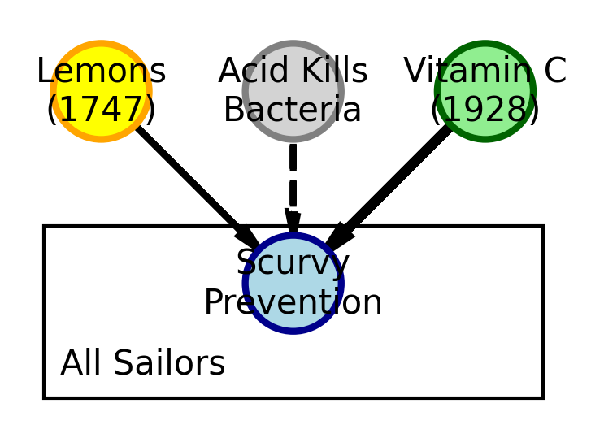

Core Question: How can we use the DAFT package to create visually appealing Directed Acyclic Graphs (DAGs) that tell a compelling data story?
The Challenge: You’ll reproduce and enhance the scurvy DAG from the course materials, learning how to customize colors, shapes, and styling to make your probabilistic graphical models more attractive and informative.
Learning Objectives: By the end of this 30-minute challenge, you’ll be able to: - Install and import the DAFT package - Create basic probabilistic graphical models - Customize node colors, shapes, and styling - Use the DAFT documentation effectively
Background: The Scurvy Story
Scurvy was a devastating disease that affected sailors on long voyages. The cure was discovered in 1747, but due to a misunderstanding about the cause, the cure was lost for over 150 years. The story involves three different understandings of the data generating process:
Let’s create a more complex DAG that shows the historical progression of understanding:
# Create a historical DAG showing the evolution of understandingpgm_historical = daft.PGM(dpi=150, alternate_style="outer")# 1747 Understanding (correct but incomplete)pgm_historical.add_node("lemons_1747", "Lemons\n(1747)", 0.5, 2, plot_params={'facecolor': 'yellow', 'edgecolor': 'orange', 'linewidth': 2})# Misguided beliefpgm_historical.add_node("acid_belief", "Acid Kills\nBacteria", 1.5, 2, plot_params={'facecolor': 'lightgray', 'edgecolor': 'gray', 'linewidth': 2})# 1928 Understanding (complete)pgm_historical.add_node("vitamin_c_1928", "Vitamin C\n(1928)", 2.5, 2, plot_params={'facecolor': 'lightgreen', 'edgecolor': 'darkgreen', 'linewidth': 2})# Common outcomepgm_historical.add_node("scurvy_prevention", "Scurvy\nPrevention", 1.5, 1, plot_params={'facecolor': 'lightblue', 'edgecolor': 'darkblue', 'linewidth': 2})# Add edgespgm_historical.add_edge("lemons_1747", "scurvy_prevention", plot_params={'color': 'green', 'linewidth': 2})pgm_historical.add_edge("acid_belief", "scurvy_prevention", plot_params={'color': 'red', 'linewidth': 2, 'linestyle': '--'})pgm_historical.add_edge("vitamin_c_1928", "scurvy_prevention", plot_params={'color': 'blue', 'linewidth': 3})# Add a plate to show this affects many sailorspgm_historical.add_plate([0.2, 0.5, 2.6, 0.8], label="All Sailors", shift=-0.1)# Render the historical DAGpgm_historical.render();

Challenge Extensions
Option 1: Color Psychology
Experiment with different color schemes that convey the right emotions: - Use warm colors (reds, oranges) for problems - Use cool colors (blues, greens) for solutions - Use neutral colors (grays) for misconceptions
Option 2: Shape Customization
Try different node shapes and sizes: - Use aspect parameter to control node width - Use scale parameter to control node size - Experiment with alternate=True for different shapes
Option 3: Advanced Styling
Explore more advanced customization: - Add custom fonts with fontsize parameter - Use plot_params to customize every visual aspect - Add plates to show repeated structures
Key DAFT Parameters to Explore
Based on the DAFT documentation, here are key parameters to experiment with:
Node Parameters: - plot_params: Dictionary of matplotlib parameters for styling - aspect: Controls node width (default: 1.0) - scale: Controls node size (default: 1.0) - fontsize: Text size in the node - alternate: Use alternative node shape (True/False)
Edge Parameters: - plot_params: Dictionary of matplotlib parameters for edge styling - color: Edge color - linewidth: Edge thickness - linestyle: Edge style (‘-’, ‘–’, ‘:’, etc.)
PGM Parameters: - dpi: Resolution for rendering - alternate_style: Style for alternate nodes (“inner” or “outer”)
Submission Requirements
Create a Jupyter notebook or Quarto document that includes:
Installation code for the DAFT package
At least three different DAGs showing your creativity
Comments explaining your design choices
A brief reflection on what you learned about data visualization